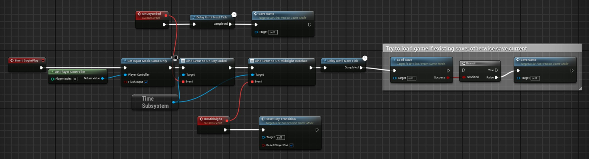
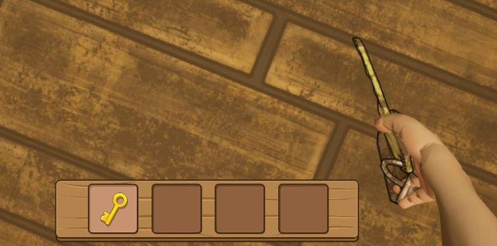
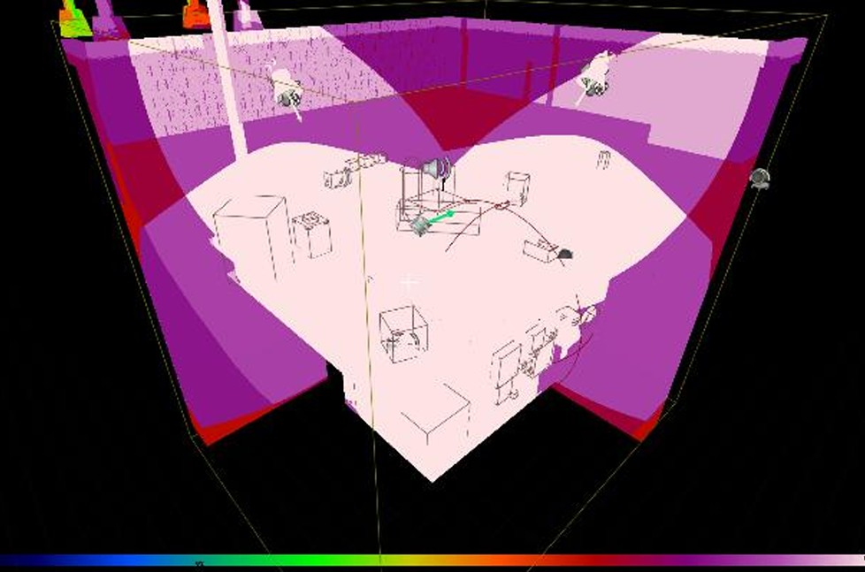
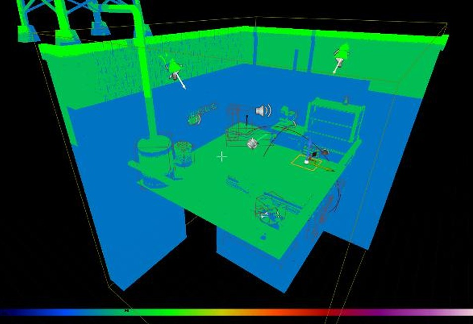
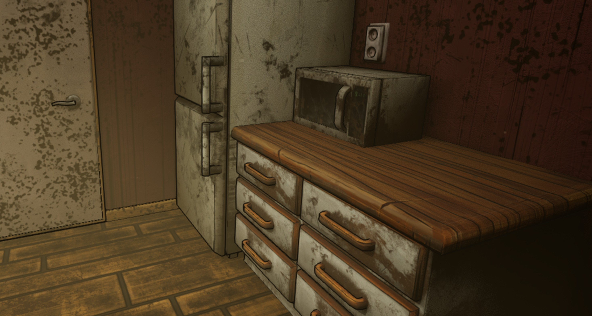
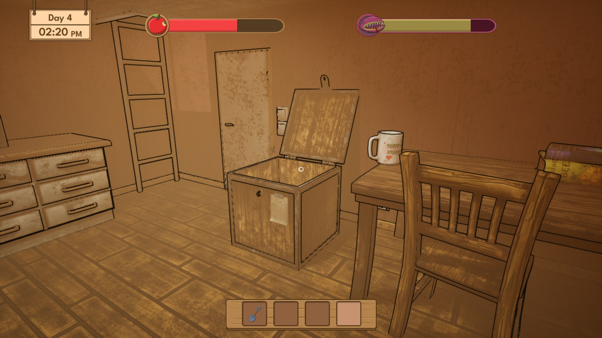
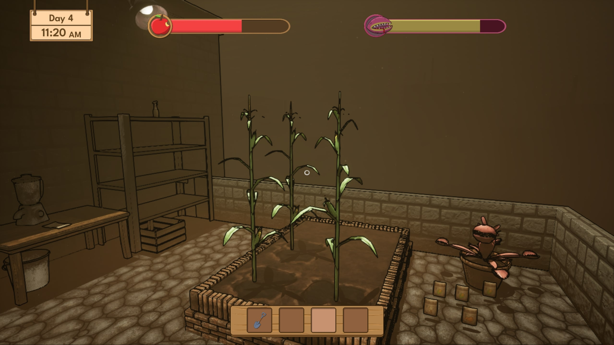
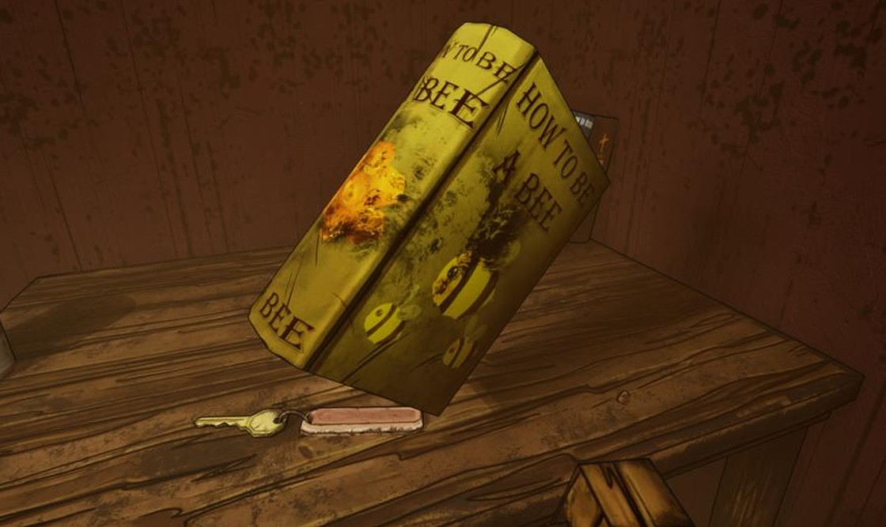

Rooftop Garden is a cozy gardening simulator within a post-apocalyptic setting. One thing that makes it stand out from the rest is your uncanny companion: the omnivorous plant, which you must feed before it feeds on you.
Inspired by Stardew Valley and Garden Life, it’s a first-person game with a day-night cycle where you must take care of your crops and manage your resources.
Currently, this project is my most well-structured
As the only programmer in the group, I wrote the entire code base for the project (except for the ladder mechanic, which was programmed by Issa). This is currently my best work in terms of a clean, maintainable, and data-oriented codebase.
Before I mention the technical details of my work, I will start with the non-technical ones.
I was a central figure in the group, since many details had to go through me as the programmer. Before I knew it, I was assigned as the Team Leader.
As such, I played an important role discussing design choices, helping my teammates out, coordinating the technical direction of the project, but also managing the structure and organization of the group and defining the documentation of the project.
The most notable document I worked on would, of course, be the Tech Document.
Now, onto more technical matters...
The following is a full UML diagram of the project.
Below are some of the project's highlights, and some of my most proud work.
The save system represents the most intricate component of the game. Daily, the condition of every actor eligible for saving is recorded in a dedicated save game object. Upon game launch, if a save game object is present, all previously saved actors are reinstated into the game.
Since there are objects (like pick-ups) that can be moved or destroyed, the system will always check for the existing saveable objects first before loading the saved ones. This is done by checking the objects’ global unique ID.
for (auto& Actor : ExistingSaveableActors)
{
FGuid SaveID = ISaveableInterface::Execute_GetSaveID(Actor);
// Loading data for existing saved actors
if (SavedActors.Contains(SaveID))
{
FSaveStruct& SaveData = SavedActors[SaveID];
LoadExistingActorState(Actor, SaveData);
ActorMap.Add(SaveID, Actor);
ActorsToSpawn.Remove(SaveID);
}
// Destroying current actors that are not in the save data
else Actor->Destroy();
}
// Spawning the saved actors that don't exist in the world
for (auto& Actor : ActorsToSpawn)
{
FSaveStruct SaveData = Actor.Value;
FGuid SaveID = Actor.Key;
AActor* SpawnedActor = SpawnFromSaveData(SaveData);
LoadSpawnedActor(SpawnedActor, SaveID, SaveData);
ActorMap.Add(SaveID, SpawnedActor);
}
The system is very modular, with each saveable actor implementing its own save and load methods through the ISaveable interface. Components can also be saved the same way using the ISaveableComponent interface.
The components of all saveable objects are checked for the interface after the owner’s data is restored/saved, and their load/save method is called. This happens within the save game object, in the Load/Save methods.
void USaveGameObject::LoadExistingActorState(AActor*& Actor, FSaveStruct& SaveData)
{
ISaveableInterface::Execute_LoadState(Actor, SaveData.SaveData);
Actor->SetActorTransform(SaveData.Transform);
if (SaveData.ComponentData.IsEmpty()) return;
auto SaveableComponents = Actor->GetComponentsByInterface(USaveableComponentInterface::StaticClass());
for (auto& Component : SaveableComponents)
{
FGuid ComponentSaveID = ISaveableComponentInterface::Execute_GetComponentSaveID(Component);
if (SaveData.ComponentData.Contains(ComponentSaveID))
{
const FComponentSaveStruct& ComponentSaveData = SaveData.ComponentData[ComponentSaveID];
ISaveableComponentInterface::Execute_LoadComponentState(Component, ComponentSaveData.SaveData);
}
}
}
Relationships between saved objects are also restored one frame after loading, using the same GUIDs.
for (auto& ActorPair : ActorMap)
{
ISaveableInterface::Execute_RestoreRelationships(ActorPair.Value, ActorMap);
}
AActor* PlayerActor = UGameplayStatics::GetPlayerPawn(GWorld, 0);
auto SaveableComponents = PlayerActor->GetComponentsByInterface(USaveableComponentInterface::StaticClass());
for (auto& Component : SaveableComponents)
{
ISaveableComponentInterface::Execute_RestoreRelationships(Component, ActorMap);
}

The system is flexible, data-driven and supports configurable inventory sizes, item stacking, and quick item switching. Each inventory slot stores an item ID, quantity, type, and an actor reference, allowing held items to be visually represented and interacted with directly.
Item pickup prioritizes stacking existing items before filling empty slots, with clear fallback logic when the inventory is full. Item metadata is retrieved from a centralized Data Table, separating game data from inventory logic for improved maintainability and scalability.
The system is fully implemented in C++.
bool UInventoryComponent::AddToInventory(const FName& ItemID, int32 Quantity, AActor* ItemActor)
{
FItemStruct ItemStruct;
const bool Success = UUtilitiesLibrary::GetActiveItemInfoStructFromID(ItemID, ItemStruct);
if (!Success) return false;
int FirstEmptySlotIndex = -1;
// Tools don't stack, so if active is empty that's where it should be placed
if (ItemStruct.ItemType == EItemType::Tool && Content[ActiveSlot].ItemID.IsNone())
{
FirstEmptySlotIndex = ActiveSlot;
}
else
{
for (int i{Content.Num() - 1}; i >= 0; --i)
{
// Record the first empty slot we find
if (Content[i].ItemID.IsNone()) FirstEmptySlotIndex = i;
// Tools don't stack, we just need the first empty slot idx
if (ItemStruct.ItemType == EItemType::Tool) continue;
// Check if there is one of these items in the inventory already, if so add to that stack
if (Content[i].ItemID == ItemID)
{
// Do not attach an extra item since you already have it
SetItemInfoContent({ItemID, Quantity, ItemActor, ItemStruct.ItemType}, i, false);
OnInventoryChanged.Broadcast(i);
return true;
}
}
}
if (FirstEmptySlotIndex == -1)
{
OnAddInventoryFailed.Broadcast(FText::FromString("No inventory space"));
return false; // inventory full
}
// If the active slot is empty add item there, otherwise use the first empty slot found
int SlotToAdd = FirstEmptySlotIndex;
if (Content[ActiveSlot].ItemID.IsNone()) SlotToAdd = ActiveSlot;
SetItemInfoContent({ItemID, Quantity, ItemActor, ItemStruct.ItemType}, SlotToAdd);
OnInventoryChanged.Broadcast(SlotToAdd);
return true;
}

A good amount of time was spent making sure the technical goals of the project were reached. These are the optimization methods I made use of:





